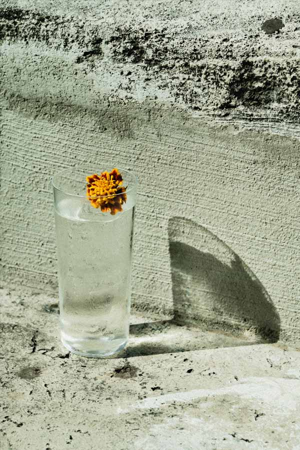
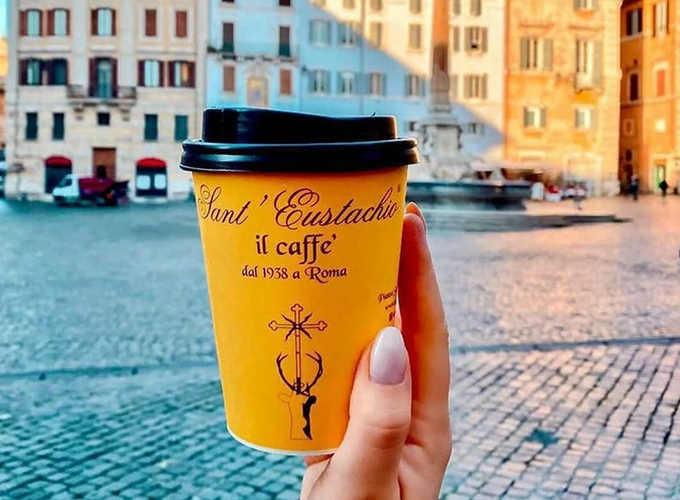
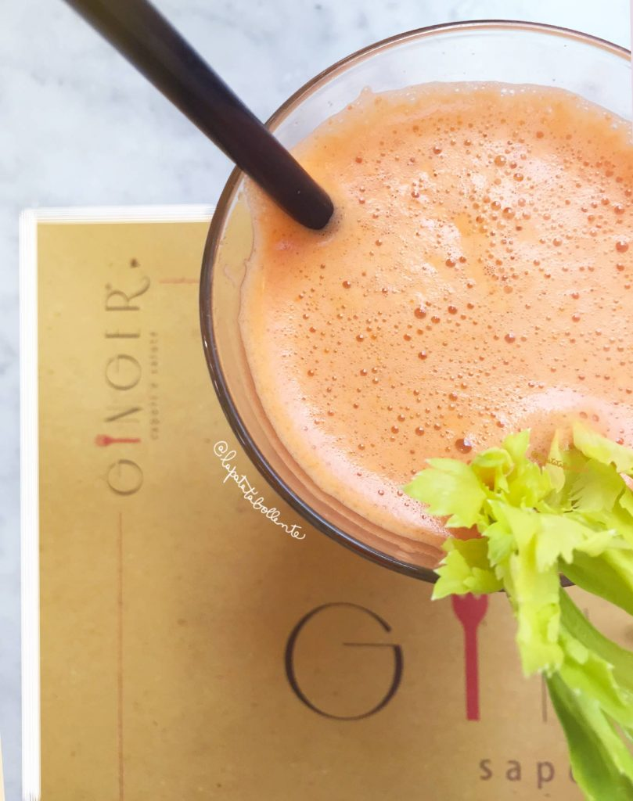

Sip on local favorites, from coffee to cocktails!

Freni e Frizioni is a well-loved bar in Rome’s Trastevere district, famous for its vibrant aperitivo scene. Known for expertly crafted cocktails, this bar is the perfect spot to enjoy an evening drink with a view of the Tiber River. Their extensive cocktail menu features everything from classic Negronis to inventive seasonal drinks. During aperitivo hours, Freni e Frizioni offers a complimentary buffet with snacks and small bites, making it a must-visit for both drinks and atmosphere.

If you’re searching for the best coffee in Rome, Sant’Eustachio Il Caffè is a historic must-visit. Located near the Pantheon, this iconic café has been serving coffee since 1938, and is renowned for its rich and creamy espresso. They use a secret blend of beans, roasted on-site, making their coffee unlike anything else in the city. Whether you’re grabbing a quick espresso at the bar or sitting down to enjoy a cappuccino, Sant’Eustachio offers a quintessential Roman coffee experience.

For a fresh and healthy drink option, Ginger Sapori e Salute is the place to go. Located near the Spanish Steps, this trendy café and juice bar specializes in fresh-pressed juices, smoothies, and organic cocktails. Their smoothies are packed with superfoods like chia seeds, kale, and acai, making it a popular spot for health-conscious locals and tourists. They also offer refreshing mocktails and cocktails made with natural ingredients, perfect for sipping on their outdoor patio after a day of exploring Rome.